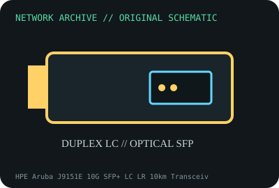

[ MODEL-SPECIFIC NETWORK HARDWARE ]
HPE Aruba J9151E 10G SFP+ LC LR 10km Transceiver
10GbE 1310nm single-mode optic for long-reach links. Confirm exact product label and revision before applying specifications.

IDENTIFICATION: Confirm manufacturer PID, hardware revision, device ID or module suffix. Nominal standards/link rates are not measurements of payload performance.
Exact specifications and compatibility
| Dedicated subcategory | SFP transceivers: optical and copper |
|---|---|
| Exact product/model | HPE Aruba J9151E 10G SFP+ LC LR 10km Transceiver |
| Bus, ports and physical interface | SFP+ module with duplex LC connector; compatible Aruba host port. |
| PHY, radio or protocol | 10GBASE-LR at 1310nm over single-mode fiber; product class specified for up to 10km under qualified channel budget. |
| Nominal rate (not measured) | 10Gb/s nominal PHY rate; reach limit is not measured throughput. |
| Measured throughput | No measured benchmark is claimed for a physical specimen. A valid result must record host/peer, link partner, media/cable, driver/firmware, traffic pattern, test tool and duration. |
| Drivers, OS and firmware | No host driver; use Aruba-supported platform/software and module compatibility documentation. |
| Compatibility | Match LR optics at both ends, duplex SMF and optical budget; check short-span receiver power and platform qualification. |
| Variant warning | J9151E is specific Aruba LR generation, distinct from J9151A/D and J9151E-coded substitutes. Confirm PID and approved host list. |
Model and revision notes
J9151E is specific Aruba LR generation, distinct from J9151A/D and J9151E-coded substitutes. Confirm PID and approved host list.
No host driver; use Aruba-supported platform/software and module compatibility documentation.
Match LR optics at both ends, duplex SMF and optical budget; check short-span receiver power and platform qualification.
Archival, ESD and preservation notes
Record PID, DOM, link ends, host and fiber route; cap and ESD-store module, clean LC using proper fiber tools.
Document source URL, access date, document revision and specimen label/condition. Preserve without credentials or private configuration.
Primary manufacturer and standards sources
- HPE Aruba transceiver product dataPrimary manufacturer or standards documentation; verify exact SKU and host revision.
- Aruba transceiver compatibility guidePrimary manufacturer or standards documentation; verify exact SKU and host revision.
- IEEE 802.3 Ethernet standardsPrimary manufacturer or standards documentation; verify exact SKU and host revision.
Manufacturer statements cover the named part or its documented product family; the exact labeled revision and vendor compatibility list take precedence.